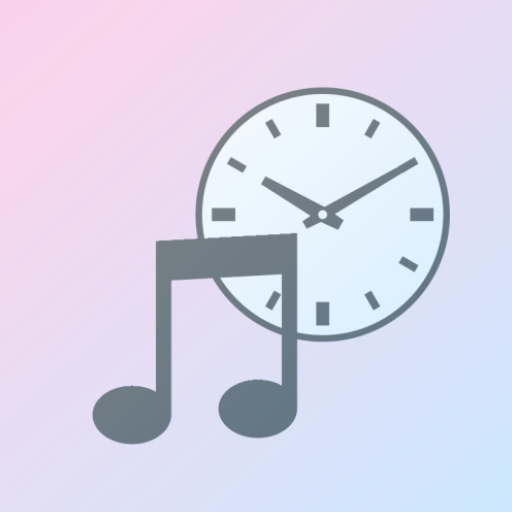
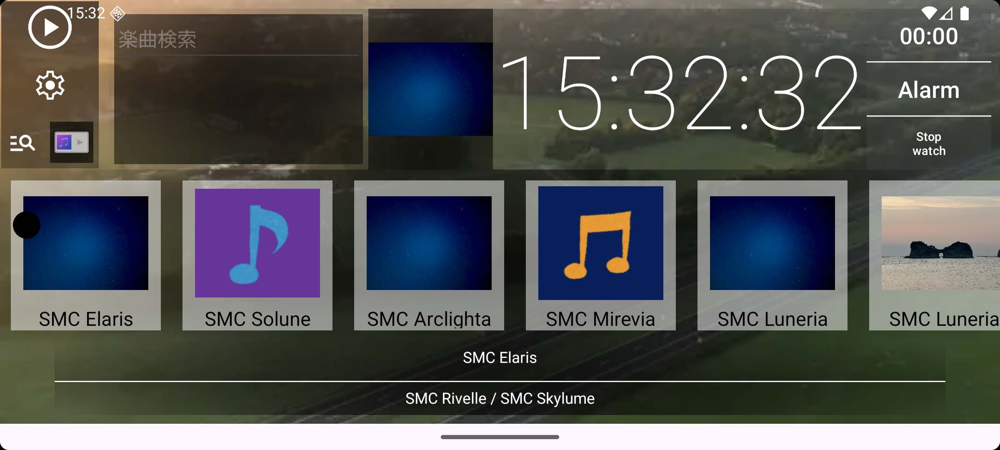

YAMATO2010公式サイトへようこそ!!
プロフィール

名前：YAMATO2010
- 主に使う言語：Kotlin
- 主な開発：Androidアプリ開発
コメント
自分が作りたいものを主に作っています！ゲームとかの娯楽そのものより、その娯楽を動かし、活かすツールを作るほうが好きなタイプです！
最近の作品
Sense Music Clock

シャッフル再生に強いローカル音楽プレイヤーアプリ。時計機能付きで、背景を自由に選ぶことができます。

詳しくはこちら